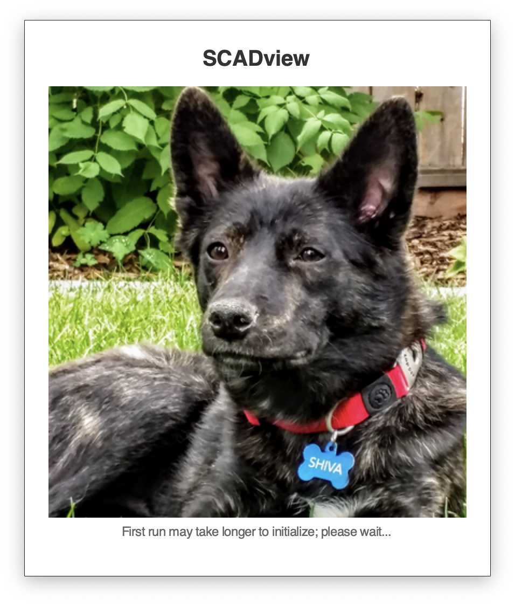
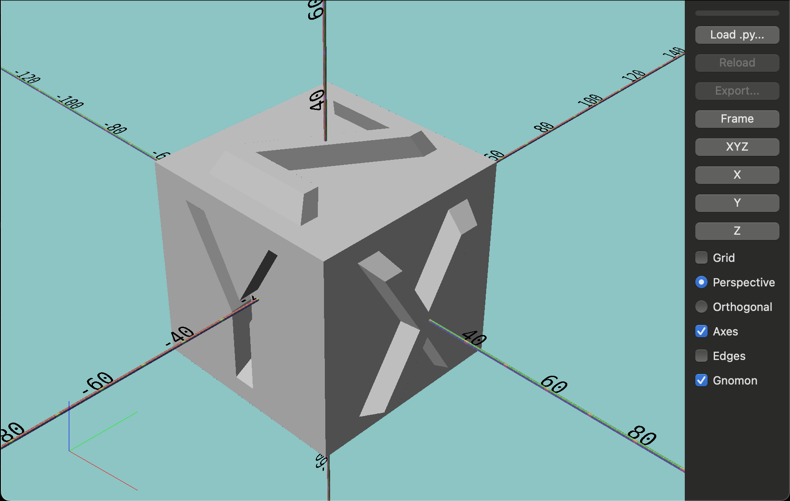
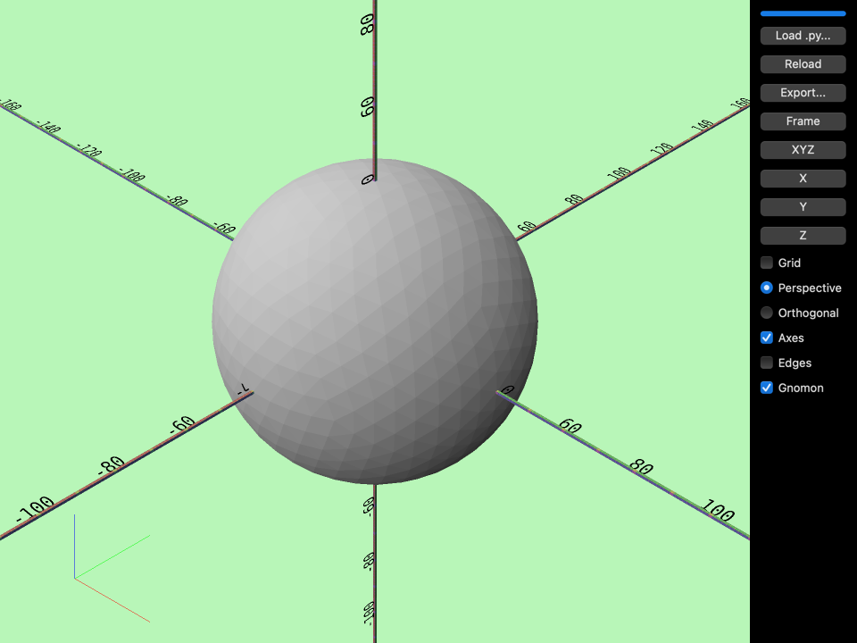
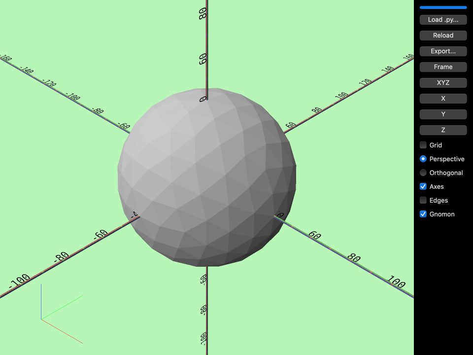
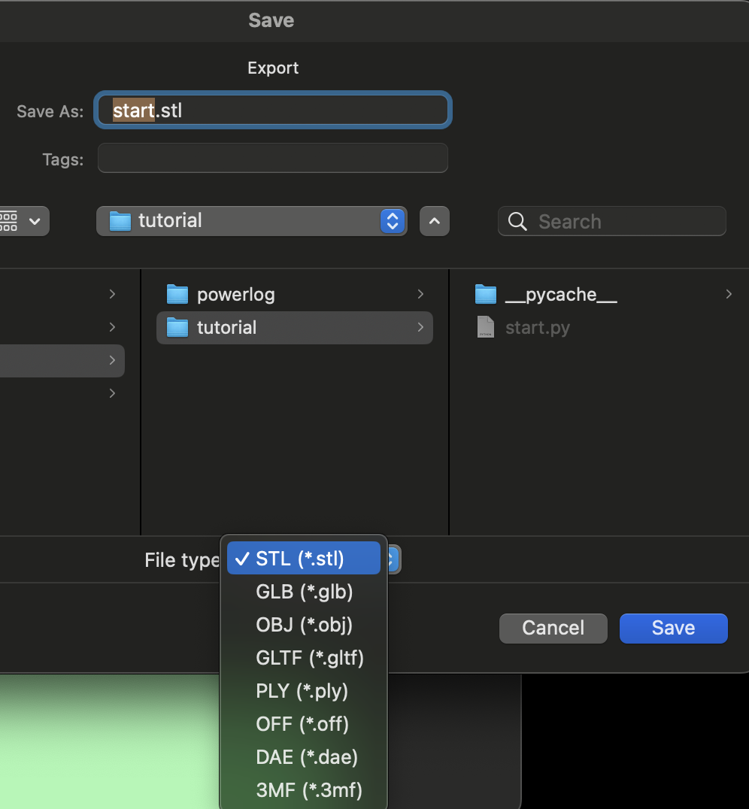

Welcome to SCADview
SCADview enables quickly viewing and iterating on scripted 3d models created by Trimesh or manifold3d. SCAD is "scripted computer assisted design", and SCADview allows you to view your SCAD models. You do this by running SCADview, writing code to create a Trimesh object, and loading it from the SCADview UI.
Python versions supported
SCADview supports Python versions 3.11 - 3.13, since some packages it depends on do not supply wheels for versions > 3.13. Attempting to install in 3.14 or higher may result in an error.
How it works
SCADview enables a iterative work flow to build Trimesh objects.
- Create a new python file, and
- Write a
create_meshfunction code to build a Trimesh object. - Run SCADview on the command line via:
scadview - Load the Python file into SCADview.
- SCADview shows you the mesh. You can move the camera around to inspect your mesh.
- Edit your Python file to modify your mesh.
- Reload and view the modified mesh.
- Repeat the edits and reloads.
Getting Started
Installation
Open your terminal application
for example cmd in Windows
or Terminal.app under Applications > Utilties > Terminal.app in macOS.
In the terminal, check that you have Python 3.11 through 3.13 via
python --version
or, if the python command cannot be found:
python3 --version
If Python 3.11 through 3.13 is installed on your system, you can install SCADview directly into your system.
Virtual venv option
As is always a good practice, set up a Python virtual environment and activate it: - see Creating virtual environments.
Install Trimesh
First install Trimesh so you can script your 3d models (if using a virtual environment, activate it first):
pip install trimesh
Trimesh has optional modules you can add.
Read its docs to determine which ones will help you most.
Install SCADview
To install, SCADview run
pip install scadview
If you already have a project using Trimesh set up, install scadview into that project instead and install there.
Running
To run: scadview
The first time you run, it can take some time to set up the user interface, and so it may take longer than when you run it in future runs.
A splash screen may show on startup.
If it is not available,
you will see a message in the terminal output:
WARNING scadview.ui.splash_window: The splash screen is not available so it will not be shown.

Once it has initialized, you should see the main user interface.
The image below does not show the OS-specific "chrome" (such as the title base, close button).

Notice that your terminal shows output from the scadview module.
Loading in your model
Using a code editor, create a file with the following python code:
from trimesh.creation import icosphere
def create_mesh():
return icosphere(radius=40, subdivisions=3)
Notice that you don't need to import the scadview package.
Save the file:
- If you did not create a virtual environment, you can save it anywhere on your system.
- If you installed in a virtual environment, save your file in that folder.
Use the Load button on the SCADview UI to load the file.
You should see a sphere!

Modify and reload
Now change the subdivisions parameter in your code to 2:
from trimesh.creation import icosphere
def create_mesh():
return icosphere(radius=40, subdivisions=2)
Click Reload. You should see an updated sphere with fewer triangles.

Export
Once you are happy with your mesh, you can export it for 3d printing or for loading other 3d software.
- Click the
Exportbutton. - Choose a format.
- Click Save.
The Export dialog may look different on your computer.
